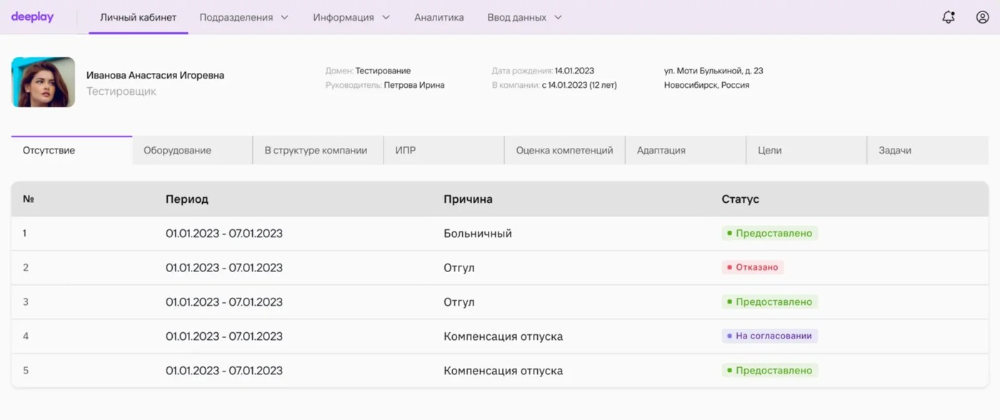
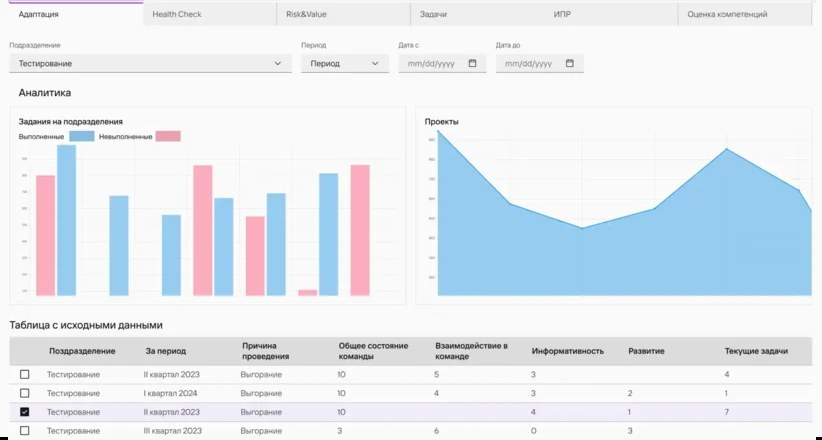
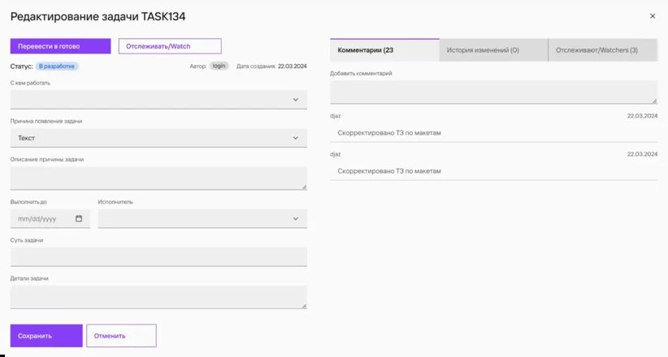
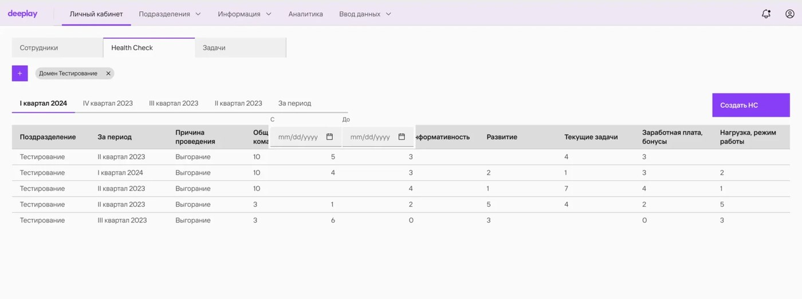

Таск-трекер для управления персоналом крупной ИТ-компании: объединяет данные о сотрудниках из разрозненных источников, формирует календарь HR-задач и даёт аналитику по удовлетворённости и квалификации персонала.
Заказчик — директор по персоналу компании Deeplay, продуктовой IT-компании, объединяющей 500+ разработчиков, аналитиков, архитекторов и инженеров из разных локаций. HR-команда вела данные о сотрудниках в разрозненных источниках: своей целостной системы не было, а задачи вроде адаптации новичков, оценки компетенций или отслеживания выгорания решались вручную и терялись между инструментами.
Проект строился на гипотезах HR-службы о том, что можно повысить эффективность взаимодействия руководителей и сотрудников и автоматизировать часть работы HR-специалистов. Нужно было спроектировать таск-трекер, который проверит эти гипотезы, и уложиться в сжатые сроки: MVP за 3 месяца. Отдельное условие — интеграция с корпоративными системами заказчика: 1С, Azure, AD, почтой и мессенджером.
Команда со стороны разработчика — 12 специалистов, я единственный дизайнер на проекте, работала в связке с двумя системными аналитиками, которые фиксировали требования от HR-службы заказчика. Заказчик описал в общих чертах ожидаемый результат, а более 30 бизнес-процессов и функциональных требований мы фиксировали и прорабатывали итеративно, в диалоге с ним. Это было ключевым решением проекта наравне с прототипированием интерфейса перед версткой.
Центральный экран системы: карточка сотрудника с основными данными (домен, руководитель, дата рождения, стаж, адрес) и вкладки по каждому HR-процессу — отсутствия, оборудование, место в структуре компании, ИПР, оценка компетенций, адаптация, цели, задачи. Раздел «Отсутствие» показывает заявки на больничный, отгул или компенсацию отпуска со статусом согласования.

Раздел «Адаптация» строит аналитику по подразделению — выполненные и невыполненные задания, динамику по проектам — и держит рядом таблицу с исходными данными, чтобы график и цифры, из которых он собран, можно было сверить на одном экране. Карточка задачи открывается модальным окном поверх текущего экрана: статус, автор, срок исполнения и обсуждение с коллегами — без перехода на отдельную страницу.


Отдельный раздел для руководителей — регулярный срез состояния команды по подразделению и периоду: общее состояние, взаимодействие в команде, информативность, развитие, нагрузка. Фильтр по домену и кварталу позволяет сравнивать периоды и заметить проблемы в команде раньше, чем они выльются в увольнения.
